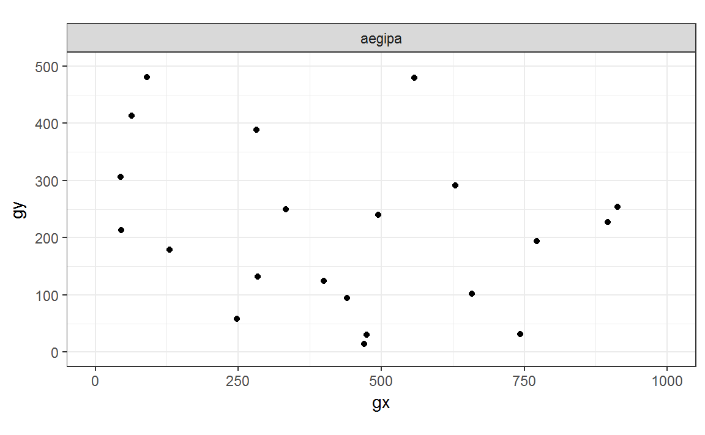
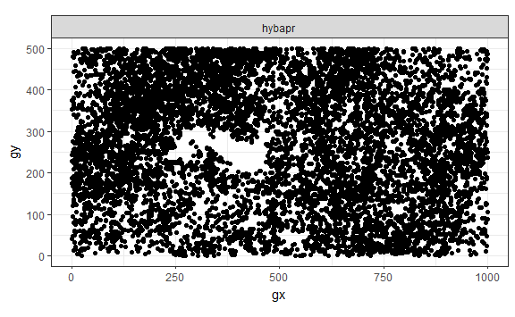
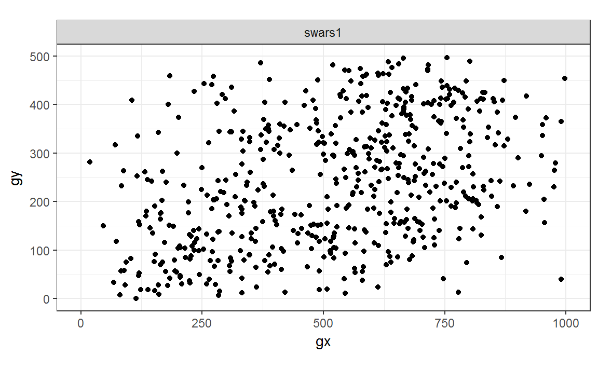
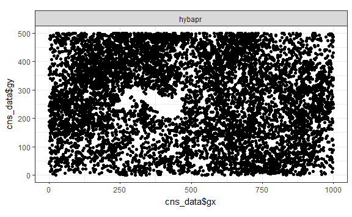
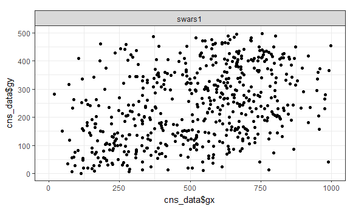
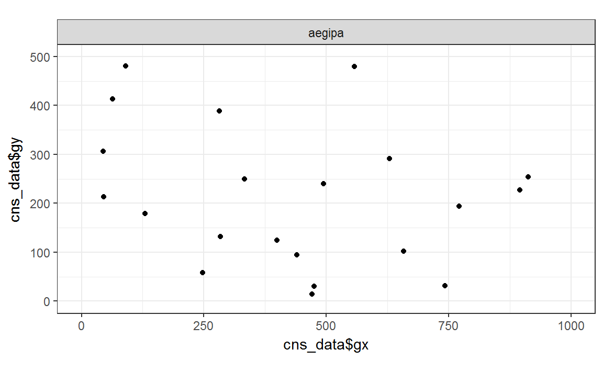
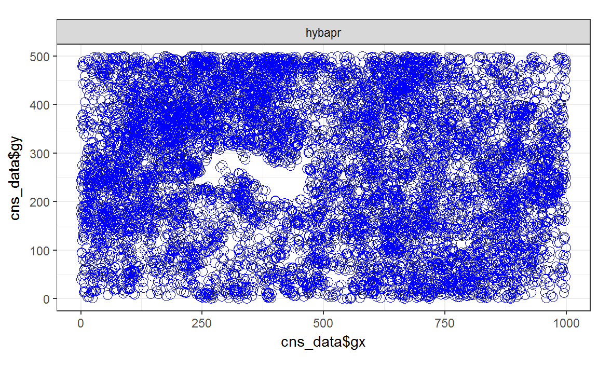
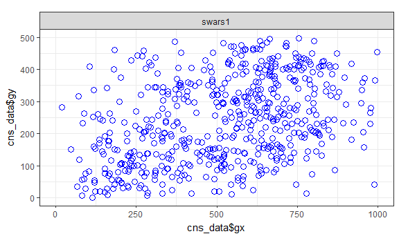
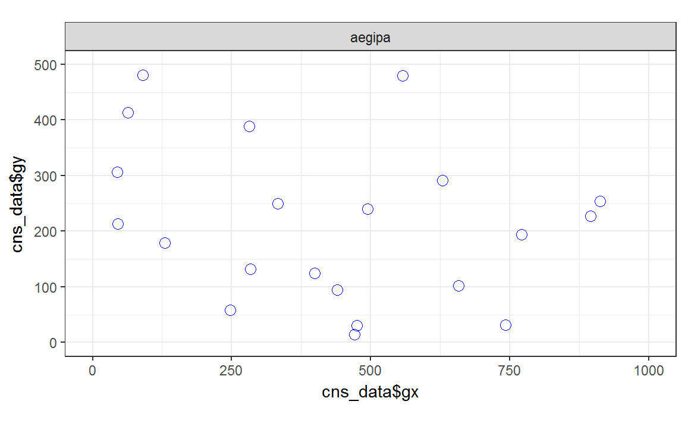

# Useful packages
library(ggplot2)
library(dplyr)# Data
library(bci)
# Data for a minimal example.
cns_data <- bci::bci12full7
# Filtering 3 species only
species_selected <- unique(cns_data$sp)[1:3]
cns_data_sub <- filter(cns_data, sp %in% species_selected)
# Sampling only some rows
cns_data_sub <- sample_n(cns_data_sub, 10000)Set plot limits for all plots to have consistent size.
xlimits <- c(0, max(cns_data$gx, na.rm = TRUE))
ylimits <- c(0, max(cns_data$gy, na.rm = TRUE))Make the plot you want for each species; then wrap it with a function. This step is what makes this approach flexible; you can do whatever plot you want.
plot_sp <- function(cns_data_sub) {
ggplot(data = cns_data_sub, aes(x = gx, y = gy)) +
geom_point() +
facet_grid(. ~ sp) +
coord_fixed(xlim = xlimits, ylim = ylimits) +
theme_bw()
}Make a list of data frames, split by species; then apply your plotting function to each element of the data frames list.
split_by_sp <- split(cns_data_sub, cns_data_sub$sp)
plot_list <- lapply(split_by_sp, plot_sp)Save the resulting list of plots to your favorite device.
pdf()
plot_list
dev.off()For example, the code above produced the plots shown below, but on a single .pdf file with one species plotted on a different page.
plot_list
#> $aegipa
#>
#> $hybapr
#> Warning: Removed 4 rows containing missing values (geom_point).
#>
#> $swars1
When you can sacrifice flexibility for speed, you may try lapply_plot_sp():
# The package try is where I try new things that I may or may not develop.
library(try)
# Selecting all species in the example dataset
all_species <- unique(cns_data_sub$sp)
lapply_plot_sp(species = all_species, cns_data = cns_data_sub)
#> [[1]]
#> Warning: Removed 4 rows containing missing values (geom_point).
#>
#> [[2]]
#>
#> [[3]]
With lapply_plot_sp(), you can (only) vary the looks of the plotted points:
lapply_plot_sp(
species = all_species, cns_data = cns_data_sub,
# Change the look of the points passed to ?geom_point
color = "blue", size = 3, shape = 1
)
#> [[1]]
#> Warning: Removed 4 rows containing missing values (geom_point).
#>
#> [[2]]
#>
#> [[3]]